← Overall ranking · Lab gallery
F07 · Request Details — version ranking
Family task: Request details (/requests/{id}): understand one request (CR-104 Logo & brand kit) - status, timeline, attachments, owner/budget/due - and act on the pending decision: approve a concept direction or request changes.
Baseline context: Shared captured data across versions: awaiting approval of 3 concept directions (concepts-v1.zip 18.1 MB, 3h ago), brief (brand-brief.pdf 2.4 MB), Rs.12,500 budget, owner Priya Shah, due 6 Nov 2026, 72-hour turnaround note. Approve is a real-state production action; in the lab every version correctly toasts instead of mutating.
Leading version(s): V4 · Confidence: medium — Complete screenshot set + interaction/axe/keyboard runs in one pinned environment; single evaluator; designed empty/loading/error states generally have no public trigger and were not observed unless a version's task notes say so; system-font fallback instead of Outfit.
Tie groups: V5, V2 (58.8–60.0) · Production comparison: Comparison place #3 of 6 at 66.2. Lab-only winner remains V4. Practical tie-break used inside a 2.0-point group.
Manual repairs applied · 29 October 2026. V1–V5 have been updated. F07 fix log and current verification.
Scores, issues and screenshots below are the original pre-fix review, not a new ranking. “Source (unmodified)” refers to that historical snapshot; the linked pages now include repairs.
Lab-only scores
| Rank | Version | Total /100 | Task clarity (w25) | Usability (w20) | Visual craft (w15) | Responsive (w15) | Accessibility (w15) | Integrity (w10) | Major+ issues |
|---|---|---|---|---|---|---|---|---|---|
| #1 | V4 · Minimal Decision | 77.5 | 4 /4 | 3 /4 | 4 /4 | 2 /4 | 2 /4 | 3 /4 | 2 |
| #2 | V3 · Stepper Process | 73.8 | 4 /4 | 3 /4 | 3 /4 | 2 /4 | 2 /4 | 3 /4 | 1 |
| #3 | V1 · Timeline-led | 67.5 | 3 /4 | 3 /4 | 3 /4 | 2 /4 | 2 /4 | 3 /4 | 1 |
| #4 | V5 · Action-Led | 60.0 | 3 /4 | 2 /4 | 3 /4 | 2 /4 | 2 /4 | 2 /4 | 2 |
| #5 | V2 · Dense Ledger | 58.8 | 2 /4 | 3 /4 | 3 /4 | 2 /4 | 2 /4 | 2 /4 | 1 |
Formula: total = Σ(weight × score ÷ 4). Dimension scores are integers 0–4 against fixed anchors (25 task clarity · 20 usability · 15 visual craft · 15 responsive · 15 accessibility · 10 integrity). Totals within 2.0 form a practical group; ties are ordered by task clarity, fewer major/critical issues, then responsive score; exact ties after these checks share rank (=).
Production page report and comparison rank
Comparison place #3 of 6 at 66.2. Lab-only winner remains V4. Practical tie-break used inside a 2.0-point group.
Live production reference. Same rubric, separate from lab version records. Not a lab template and not an automatic winner. Route: /requests/:id. Outcome: reviewed. Confidence: medium.
| Comparison place | Page | Total /100 | Task clarity | Usability | Visual craft | Responsive | Accessibility | Integrity | Major+ issues |
|---|---|---|---|---|---|---|---|---|---|
| #3 | Production · /requests/:id | 66.2 | 3 /4 | 2 /4 | 3 /4 | 3 /4 | 2 /4 | 3 /4 | 1 |
A request detail page opened from the work hub. The rendered page included status, timeline, attachments, files, and budget, and it used the word Draft. No decision button was visible in the captured controls. Nothing was submitted. Personal names and amounts were omitted.
Order if production is included
- V4 — 77.5 · comparison #1
- V3 — 73.8 · comparison #2
- Production — 66.2 · comparison #3 · inside a 2.0-point group
- V1 — 67.5 · comparison #4 · inside a 2.0-point group
- V5 — 60.0 · comparison #5 · inside a 2.0-point group
- V2 — 58.8 · comparison #6 · inside a 2.0-point group
Lab-only ranks in the table above are unchanged. Inside a 2.0-point group, task clarity, fewer major issues, then responsive score decide the comparison place.
Observed issues
- Shared shell contrast finding.
Not observed
- Owner and a decision control were not confirmed.
- Dark theme was not reviewed.
Desktop document overflow was 0 on reviewed routes. An earlier mobile pass of accounts A and B also had no document overflow and a menu control; opening that menu was not proven. Dark mode was not activated. axe-core reported four serious color-contrast nodes on the shared shell. No production screenshot was stored. None stored. Production pages can contain account data.
Shared shell / family-wide findings
- Shared shell: 49px horizontal scroll at 390px in V1/V2/V3/V5 (avatar right edge 439px); V4 is worse at 104px (494px). Desktop/tablet clean.
- All versions present the same facts and the same honest 'real-state action in production' toast on approve - a family integrity strength.
- Shared 4.33:1 contrast on secondary text (axe x4-5).
Per-version evidence
#3 · V1 · Timeline-led — 67.5
Source (unmodified): client-portal-lab/families/F07-request-details/V1/index.html
· Raw evidence: review-evidence/raw/F07-V1-raw.json
Task clarity (3/4): Timeline spine (opened -> brief shared -> awaiting your approval) tells the request story; decision lives in the right STATUS card on desktop. On mobile that card comes after the timeline, so the pending decision is not first-screen.
Usability (3/4): Approve direction produces an honest lab toast explaining it is a real-state production action not performed here; Request changes and Message are adjacent in the same card (desktop).
Visual craft (3/4): Clean timeline typography with actor chips (PS Priya Shah / NS Nestlancer) and file rows inline in the story.
Responsive (2/4): Shared 49px shell h-scroll at 390px (avatar at 439px); the decision's late mobile position is the main compromise.
Accessibility (2/4): Axe contrast x4 (shared token); timeline is text-structured. Decision controls keep labels at both sizes.
Integrity (3/4): Future steps ('In delivery', 'Delivered & archived') appear as undated timeline rows - readable as plan, though a skimmer could mistake them for history.
Interaction / task results (V1)
| Task | Result |
|---|---|
| T1_first_screen | H1='Logo & brand kit'; see desktop/mobile top screenshots |
| T2_keyboard | 12/12 stops focus-styled, 12/12 in viewport |
| T3_core_desktop | pass via button "Approve direction" |
| T3_core_mobile | pass via button "Approve direction" |
| T4_theme | toggle: pass (dark false->true); dark capture applied=True |
| T5_demo_honesty | honest feedback shown: “/projects” is another family’s route — demo affordance in this lab (see DECISIONS.md). |
| T6_mobile | h-scroll mobile=49; nav probe opened=True btnW=2; tap<24px=3 |
| T7_axe | desktop: color-contrast x4; dark: color-contrast x4 |
Issues (3)
- major
F07-V1-I1Horizontal page scroll at 390px (49px); rightmost: {'tag': 'SPAN', 'cls': 'avatar', 'right': 439} (raw overflow_mobile; F07-V1-mobile-light-top.png) - minor
F07-V1-I2axe desktop: color-contrast x4 (a[aria-current="page"] > span, .avatar > i) Fix any of the following: Element has insufficient color contrast of 4.33 (foreground color: #465fff, background color: (axe-core 4.10.2 desktop) - minor
F07-V1-I3axe dark: color-contrast x4 (a[aria-current="page"] > span, .avatar > i) Fix any of the following: Element has insufficient color contrast of 3.94 (foreground color: #5b7bff, background color: (axe-core 4.10.2 dark)

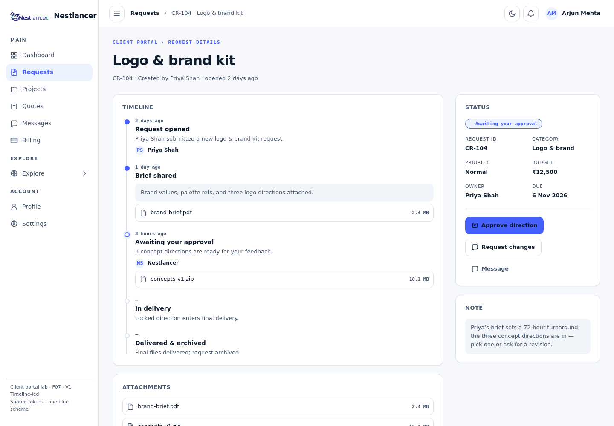

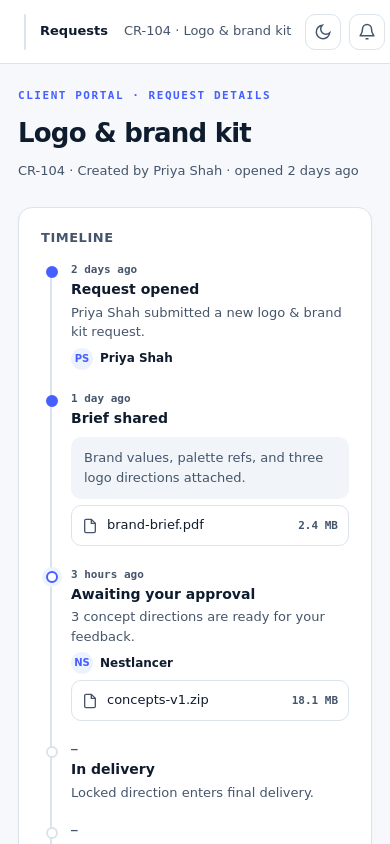

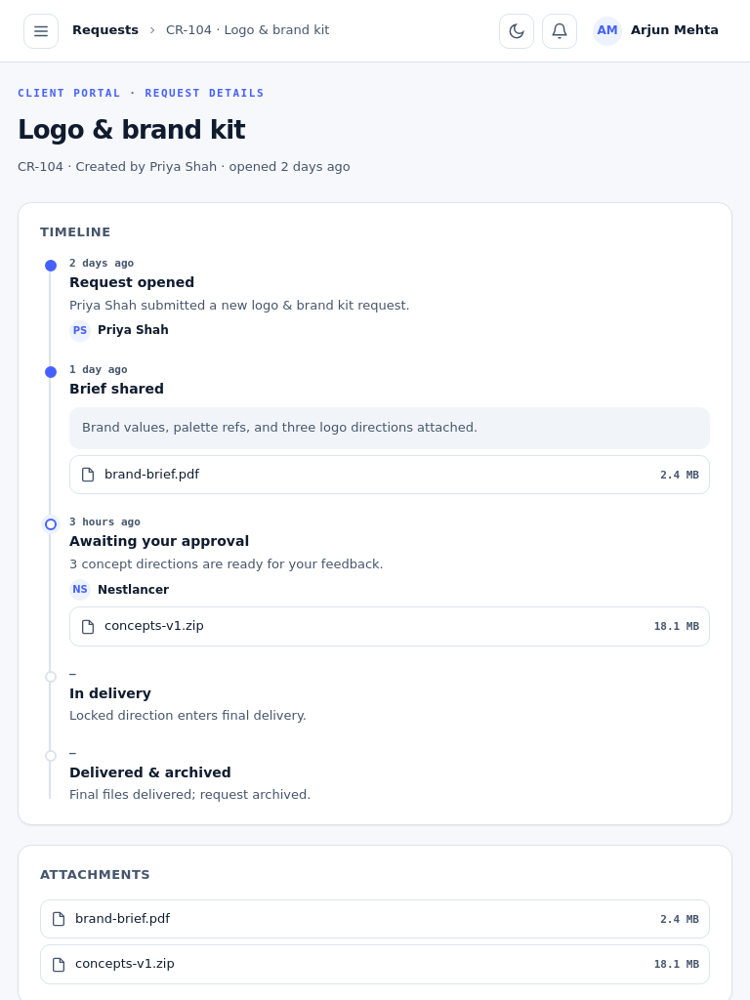

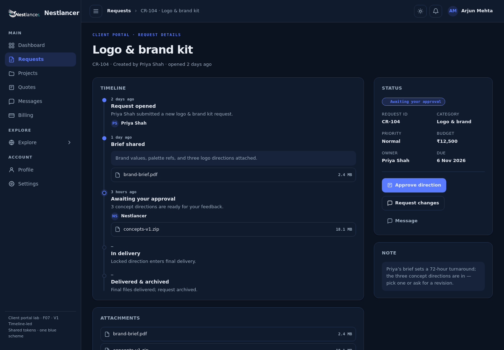


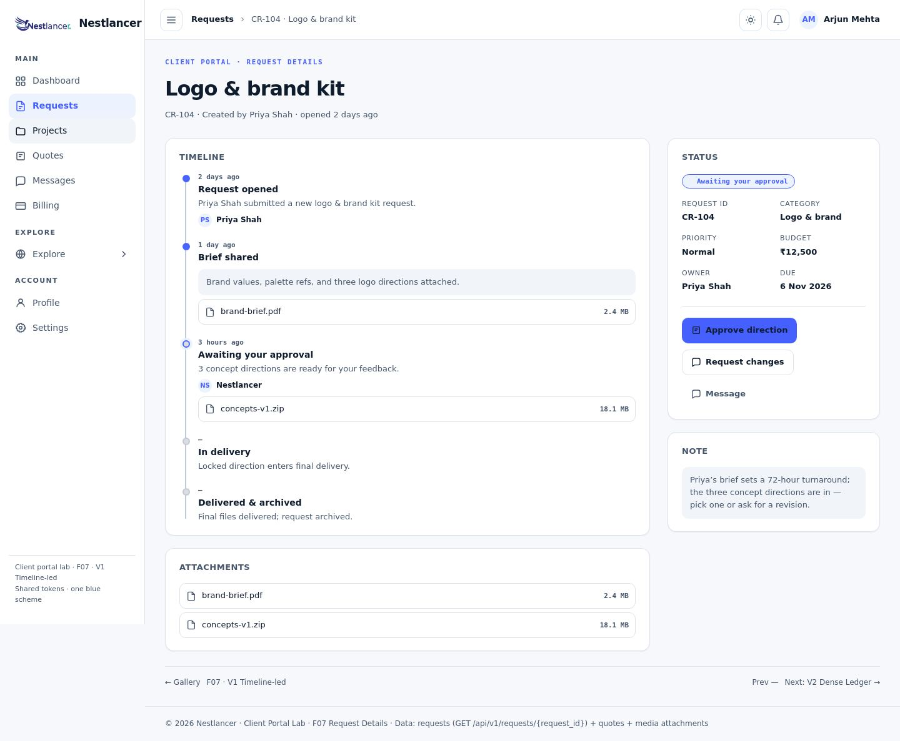
#5 · V2 · Dense Ledger — 58.8
Source (unmodified): client-portal-lab/families/F07-request-details/V2/index.html
· Raw evidence: review-evidence/raw/F07-V2-raw.json
Task clarity (2/4): Ledger-first layout buries the actual job: the table says 'Awaiting approval' but the Approve control sits in a side request card, mid-page on desktop and after attachments on mobile. Subtitle is designer meta ('ledger view - every change in one dense table').
Usability (3/4): Approve works with the same honest toast; the ledger itself is scannable once located.
Visual craft (3/4): Tidy dense table (When/What happened/Amount/Status) with aligned figures - the most audit-like presentation.
Responsive (2/4): Table compresses to three readable columns at 390px; shared 49px topbar overflow; decision still late in mobile order.
Accessibility (2/4): Contrast x4 shared; table structure aids AT, but small status text in ledger rows is the weak point.
Integrity (2/4): Future milestones are ledger rows with Rs.12,500 amounts and 'Resolved' status - presented like recorded facts, risking the impression delivery already happened.
Interaction / task results (V2)
| Task | Result |
|---|---|
| T1_first_screen | H1='Logo & brand kit'; see desktop/mobile top screenshots |
| T2_keyboard | 12/12 stops focus-styled, 12/12 in viewport |
| T3_core_desktop | pass via button "Approve" |
| T3_core_mobile | pass via button "Approve" |
| T4_theme | toggle: pass (dark false->true); dark capture applied=True |
| T5_demo_honesty | honest feedback shown: “/projects” is another family’s route — demo affordance in this lab (see DECISIONS.md). |
| T6_mobile | h-scroll mobile=49; nav probe opened=True btnW=2; tap<24px=4 |
| T7_axe | desktop: color-contrast x4; dark: color-contrast x4 |
Issues (3)
- major
F07-V2-I1Horizontal page scroll at 390px (49px); rightmost: {'tag': 'SPAN', 'cls': 'avatar', 'right': 439} (raw overflow_mobile; F07-V2-mobile-light-top.png) - minor
F07-V2-I2axe desktop: color-contrast x4 (a[aria-current="page"] > span, i) Fix any of the following: Element has insufficient color contrast of 4.33 (foreground color: #465fff, background color: (axe-core 4.10.2 desktop) - minor
F07-V2-I3axe dark: color-contrast x4 (a[aria-current="page"] > span, i) Fix any of the following: Element has insufficient color contrast of 3.94 (foreground color: #5b7bff, background color: (axe-core 4.10.2 dark)

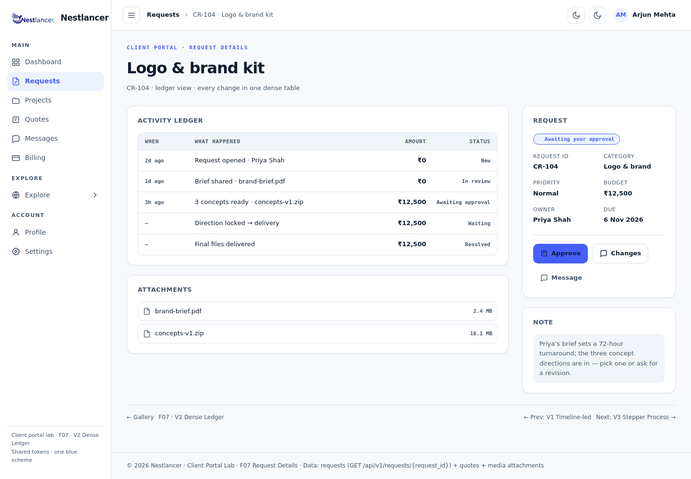

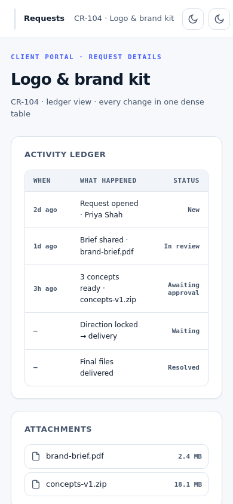

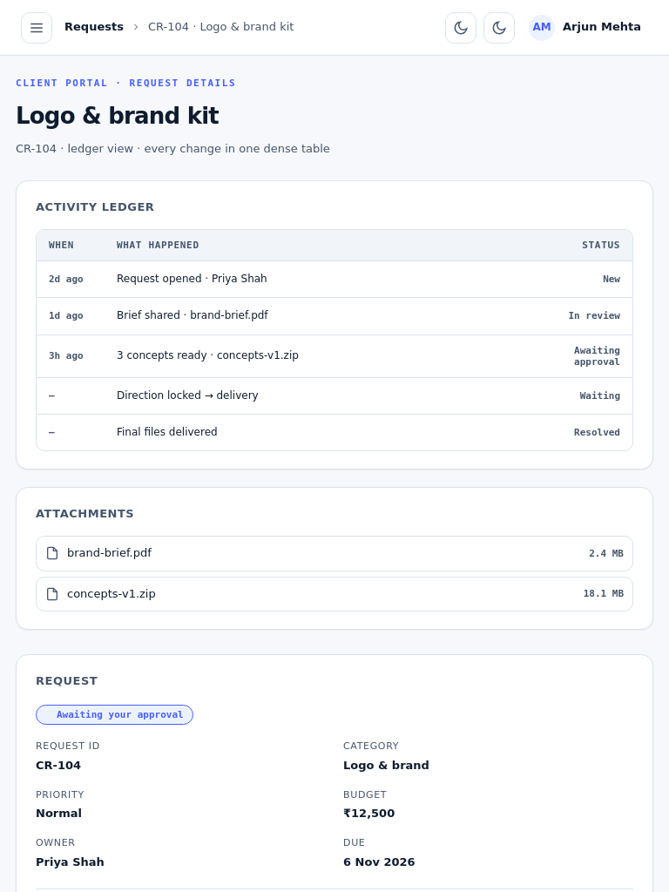

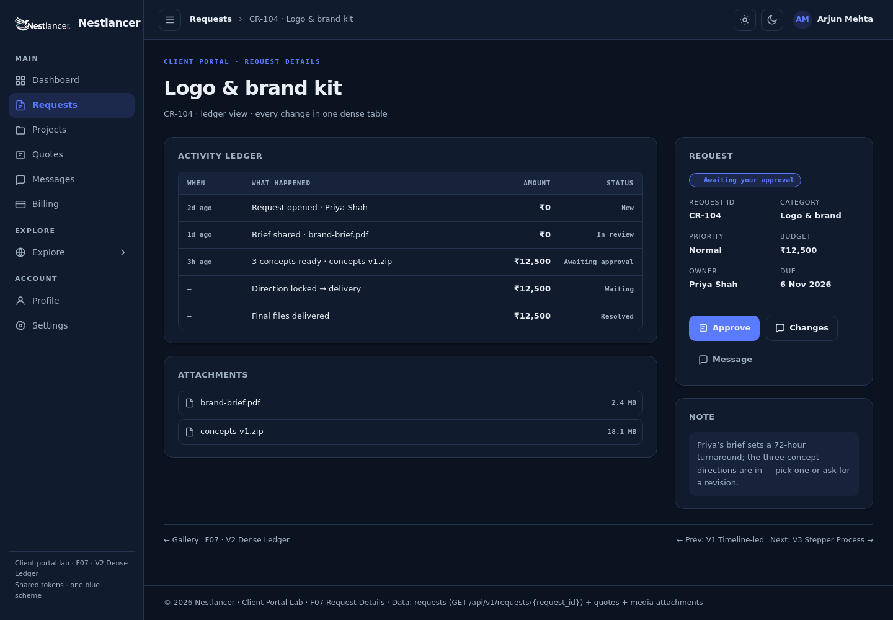


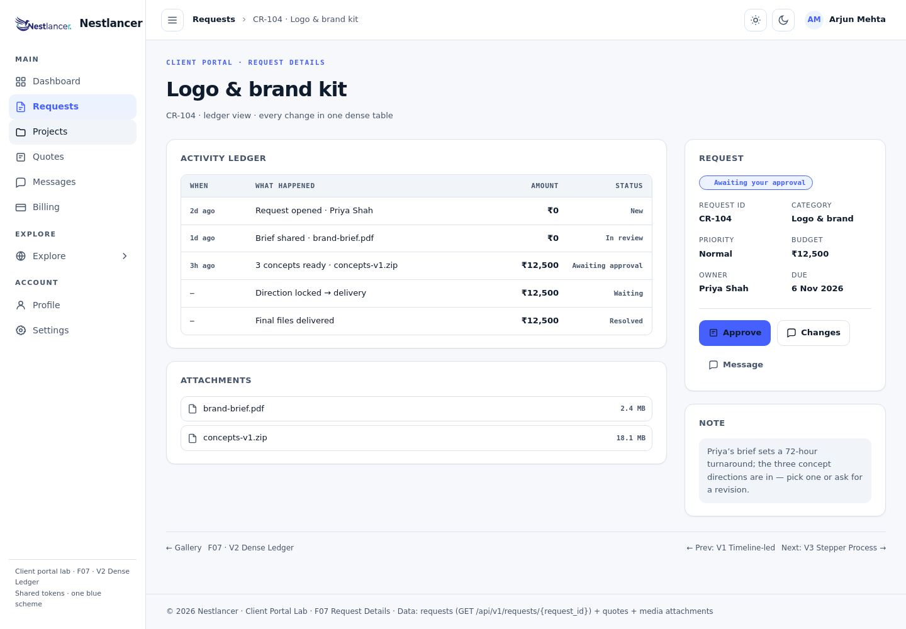
#2 · V3 · Stepper Process — 73.8
Source (unmodified): client-portal-lab/families/F07-request-details/V3/index.html
· Raw evidence: review-evidence/raw/F07-V3-raw.json
Task clarity (4/4): Process stepper (New -> In review -> Waiting on you -> Resolved) puts 'where am I and who acts next' beyond doubt, with the waiting step explicitly 'Approve a direction to continue'.
Usability (3/4): Approve/Changes/Message sit together in the request card; honest toast on approve. On mobile that card follows Process+Attachments, so the action is below the fold.
Visual craft (3/4): Balanced cards; stepper numbering and state styling are consistent at both sizes.
Responsive (2/4): Stepper reflows to a 2x2 grid on mobile - sequence still reads 1-2-3-4 - but shared 49px overflow and late decision placement keep it at notable compromise.
Accessibility (2/4): Contrast x4 shared; step state is number+text reinforced, not colour-only.
Integrity (3/4): Future state is framed as a process step (honest), amounts/owner/due date agree with the family data.
Interaction / task results (V3)
| Task | Result |
|---|---|
| T1_first_screen | H1='Logo & brand kit'; see desktop/mobile top screenshots |
| T2_keyboard | 12/12 stops focus-styled, 12/12 in viewport |
| T3_core_desktop | pass via button "Approve" |
| T3_core_mobile | pass via button "Approve" |
| T4_theme | toggle: pass (dark false->true); dark capture applied=True |
| T5_demo_honesty | honest feedback shown: “/projects” is another family’s route — demo affordance in this lab (see DECISIONS.md). |
| T6_mobile | h-scroll mobile=49; nav probe opened=True btnW=2; tap<24px=4 |
| T7_axe | desktop: color-contrast x4; dark: color-contrast x4 |
Issues (3)
- major
F07-V3-I1Horizontal page scroll at 390px (49px); rightmost: {'tag': 'SPAN', 'cls': 'avatar', 'right': 439} (raw overflow_mobile; F07-V3-mobile-light-top.png) - minor
F07-V3-I2axe desktop: color-contrast x4 (a[aria-current="page"] > span, i) Fix any of the following: Element has insufficient color contrast of 4.33 (foreground color: #465fff, background color: (axe-core 4.10.2 desktop) - minor
F07-V3-I3axe dark: color-contrast x4 (a[aria-current="page"] > span, i) Fix any of the following: Element has insufficient color contrast of 3.94 (foreground color: #5b7bff, background color: (axe-core 4.10.2 dark)

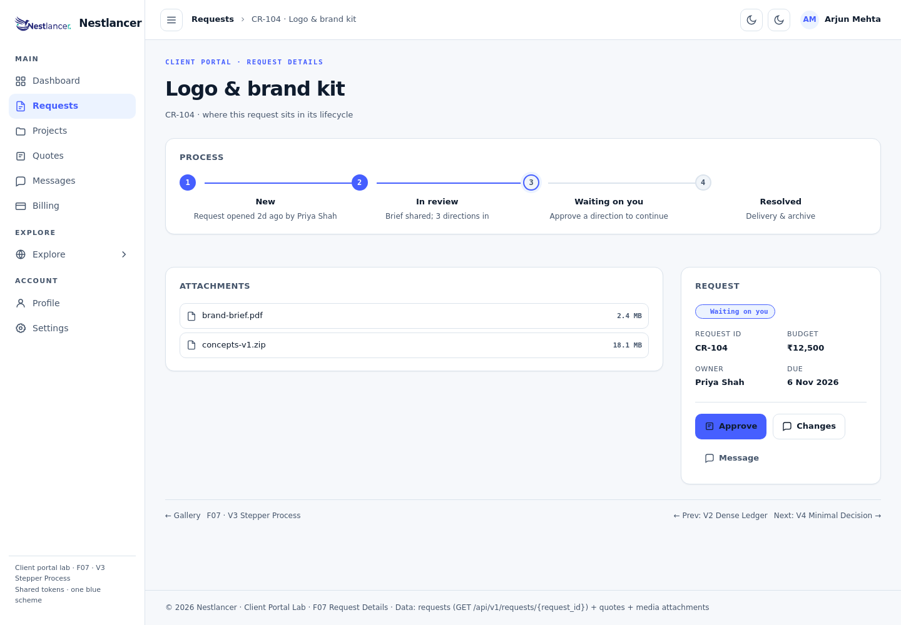

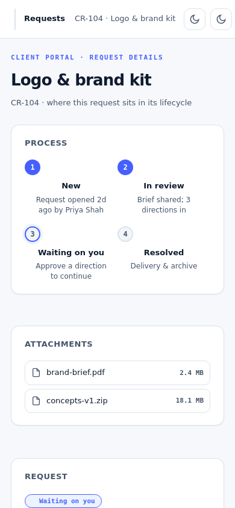

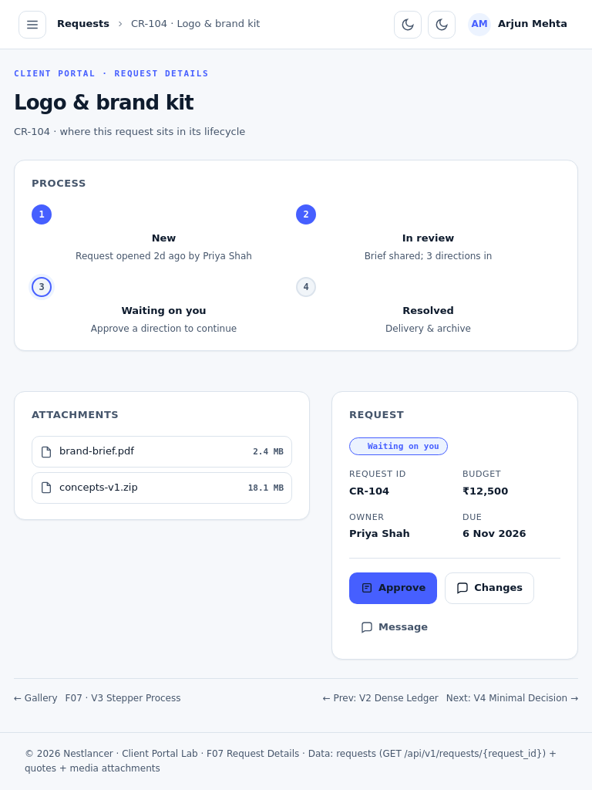

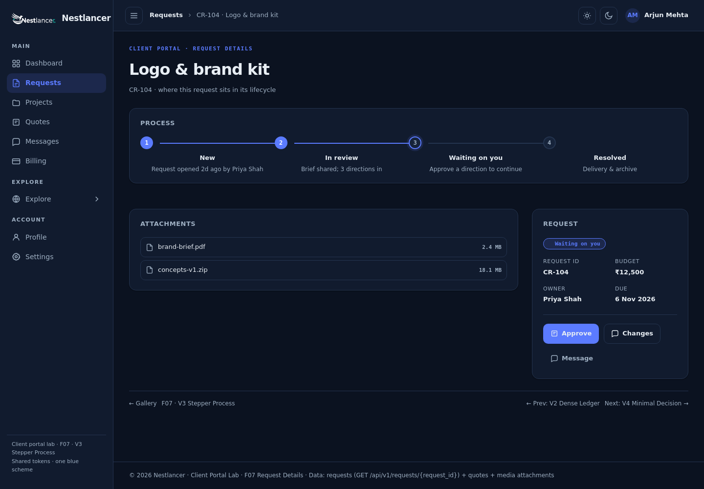

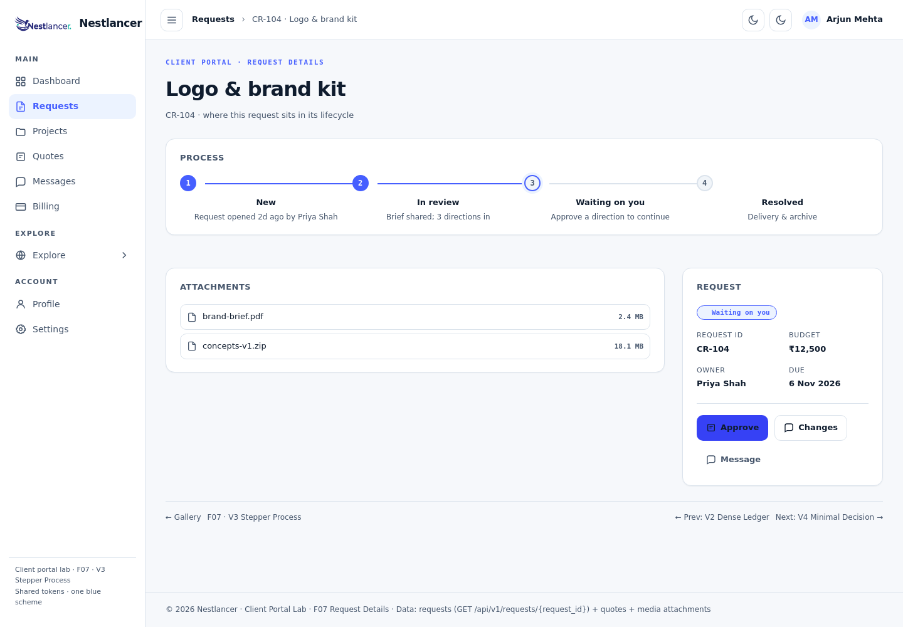


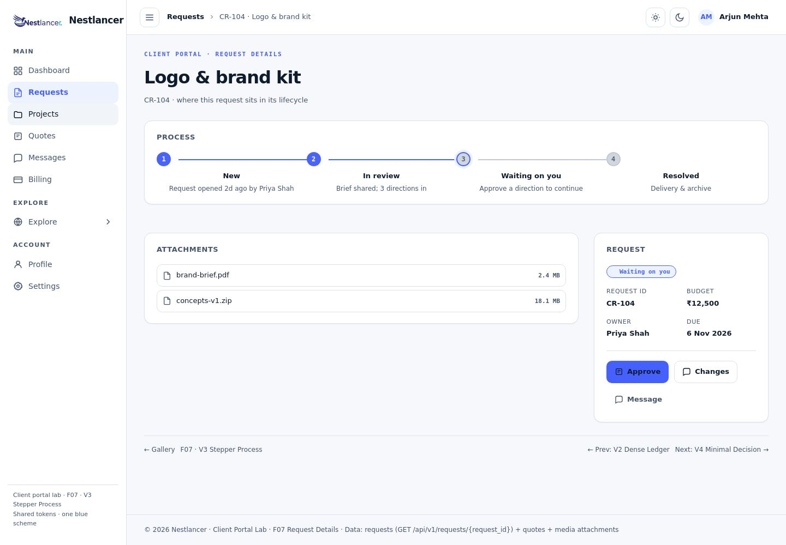
#1 · V4 · Minimal Decision — 77.5
Source (unmodified): client-portal-lab/families/F07-request-details/V4/index.html
· Raw evidence: review-evidence/raw/F07-V4-raw.json
Task clarity (4/4): One decision, framed in one sentence: 'Priya's three concept directions are in. Approve one to keep the 72-hour turnaround on track' - with file, timing and consequence ('either unblocks the next step'), detail chips, then timeline as supporting evidence.
Usability (3/4): Exactly two acts (Approve direction / Request changes), honest production-action toast; nothing else competes. Message route absent from this variant's first screen, a small completeness trade.
Visual craft (4/4): The family's most restrained and finished composition - single column, confident whitespace, sticky-feeling decision card.
Responsive (2/4): Decision card and full-width buttons are excellent at 390px, but this version's shell overflow is the family's worst (104px; avatar at 494px).
Accessibility (2/4): Contrast x4 shared; decision copy is plain language and the two controls are large labelled buttons.
Integrity (3/4): All captured facts (CR-104, Rs.12,500, Priya Shah, 6 Nov, 18.1 MB zip) present as chips/timeline; no invented states.
Interaction / task results (V4)
| Task | Result |
|---|---|
| T1_first_screen | H1='Logo & brand kit'; see desktop/mobile top screenshots |
| T2_keyboard | 12/12 stops focus-styled, 12/12 in viewport |
| T3_core_desktop | pass via button "Approve direction" |
| T3_core_mobile | pass via button "Approve direction" |
| T4_theme | toggle: pass (dark false->true); dark capture applied=True |
| T5_demo_honesty | honest feedback shown: “/projects” is another family’s route — demo affordance in this lab (see DECISIONS.md). |
| T6_mobile | h-scroll mobile=104; nav probe opened=True btnW=2; tap<24px=4 |
| T7_axe | desktop: color-contrast x4; dark: color-contrast x4 |
Issues (4)
- major
F07-V4-I1Horizontal page scroll at 390px (104px); rightmost: {'tag': 'SPAN', 'cls': 'avatar', 'right': 494} (raw overflow_mobile; F07-V4-mobile-light-top.png) - minor
F07-V4-I2axe desktop: color-contrast x4 (a[aria-current="page"] > span, i) Fix any of the following: Element has insufficient color contrast of 4.33 (foreground color: #465fff, background color: (axe-core 4.10.2 desktop) - minor
F07-V4-I3axe dark: color-contrast x4 (a[aria-current="page"] > span, i) Fix any of the following: Element has insufficient color contrast of 3.94 (foreground color: #5b7bff, background color: (axe-core 4.10.2 dark) - major
F07-V4-I4Mobile shell overflow 104px - roughly double its siblings (49px) (raw overflow_mobile)

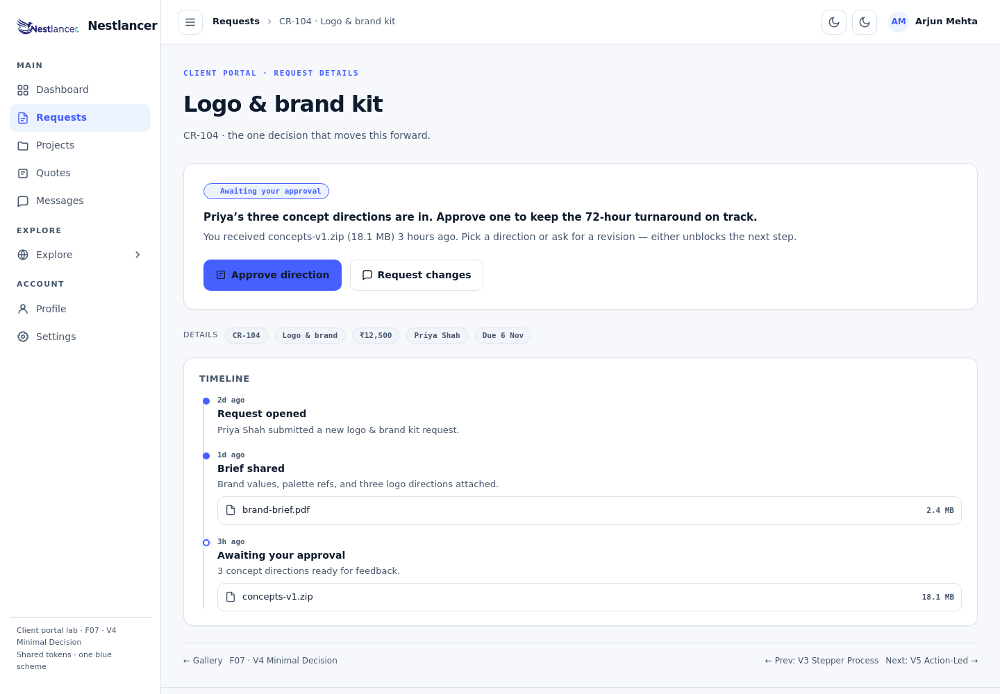

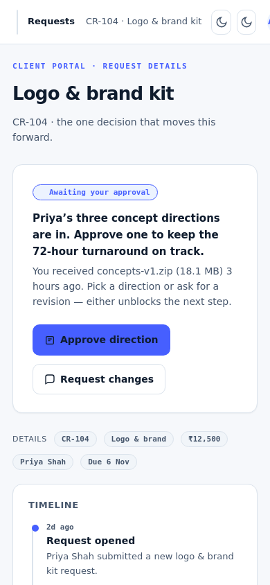

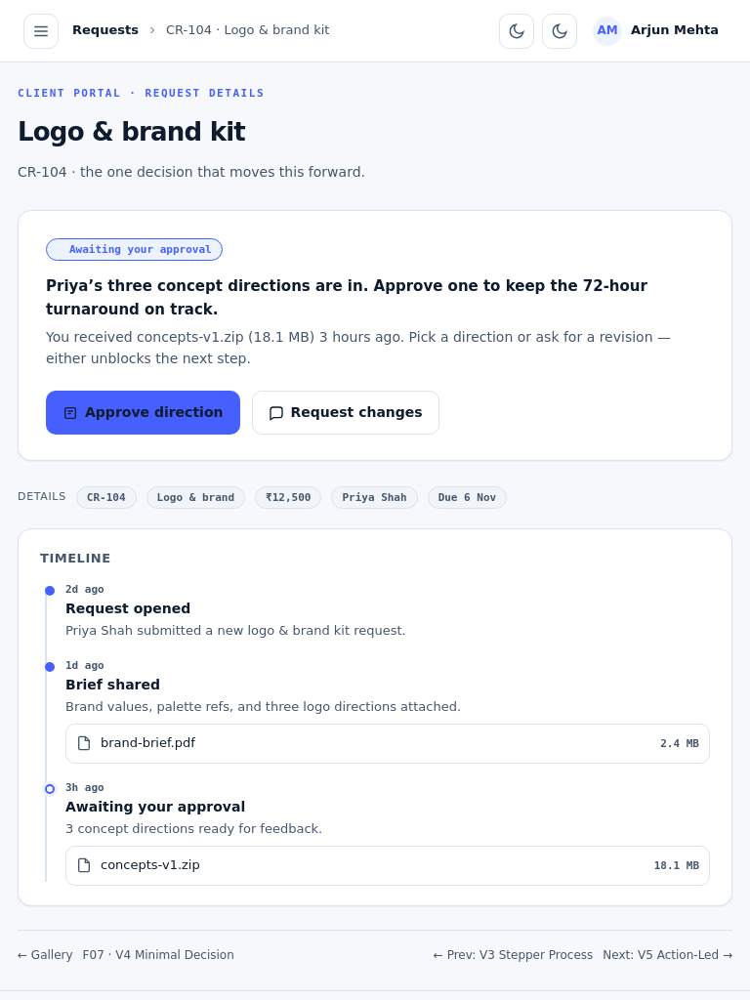

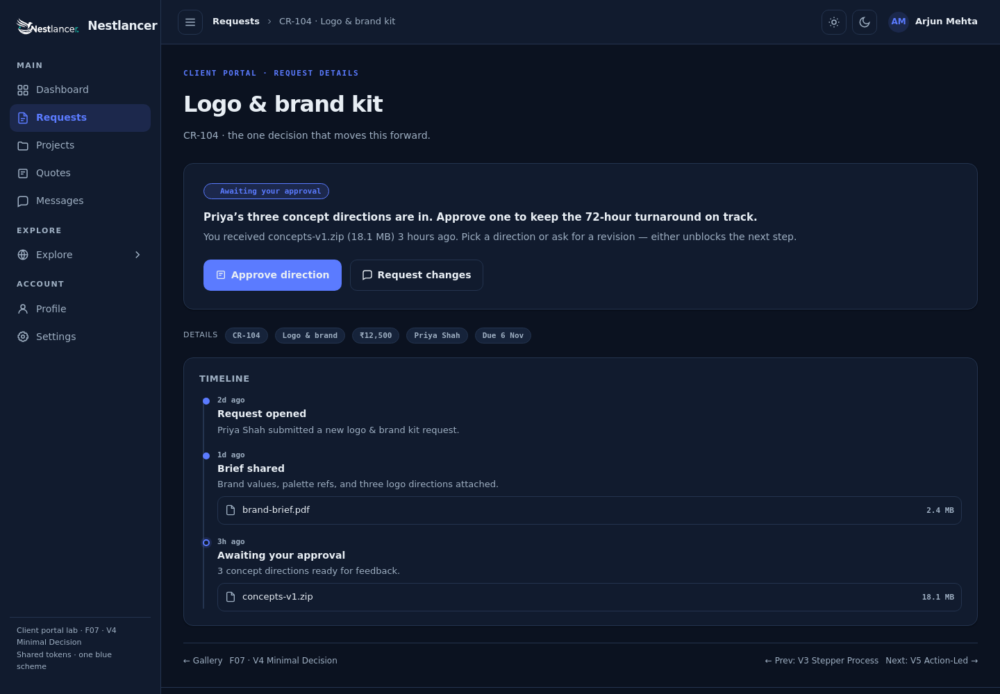

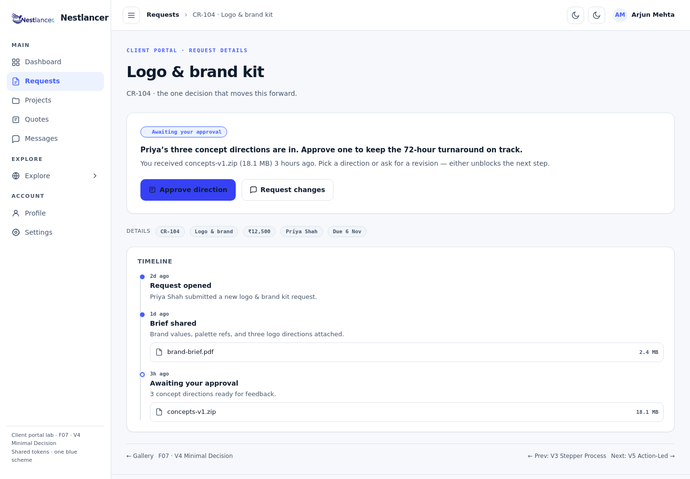


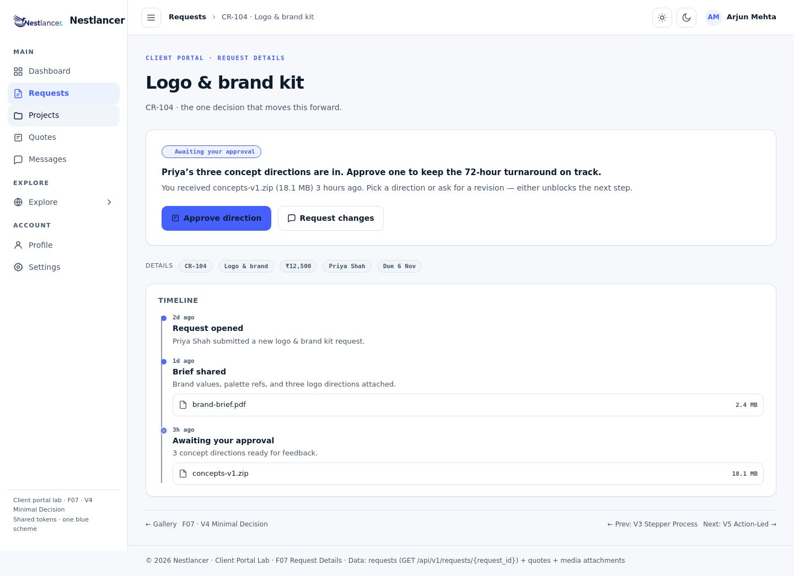
#4 · V5 · Action-Led — 60.0
Source (unmodified): client-portal-lab/families/F07-request-details/V5/index.html
· Raw evidence: review-evidence/raw/F07-V5-raw.json
Task clarity (3/4): Hero band leads with 'Approve a concept direction', but a second 'Approve' button in the request card below offers the same act twice - which control is authoritative is unclear.
Usability (2/4): Both approve controls toast, yet duplicate primaries create hesitation on an irreversible-feeling decision; Request changes also appears only in the hero, unbalancing the pair.
Visual craft (3/4): Strong hero band + familiar timeline/request cards; duplication is a composition flaw, not a styling one.
Responsive (2/4): Mobile hero buttons go full-width and come first - good; shared 49px shell overflow remains.
Accessibility (2/4): Contrast x5 (family's most, light); duplicate same-purpose buttons with slightly different labels ('Approve direction' vs 'Approve') tax AT users scanning by control name.
Integrity (2/4): Facts agree with family data; the duplicated CTA pattern is the integrity issue (one decision, two doors).
Interaction / task results (V5)
| Task | Result |
|---|---|
| T1_first_screen | H1='Logo & brand kit'; see desktop/mobile top screenshots |
| T2_keyboard | 12/12 stops focus-styled, 12/12 in viewport |
| T3_core_desktop | pass via button "Approve direction" |
| T3_core_mobile | pass via button "Approve direction" |
| T4_theme | toggle: pass (dark false->true); dark capture applied=True |
| T5_demo_honesty | honest feedback shown: “/projects” is another family’s route — demo affordance in this lab (see DECISIONS.md). |
| T6_mobile | h-scroll mobile=49; nav probe opened=True btnW=2; tap<24px=3 |
| T7_axe | desktop: color-contrast x5; dark: color-contrast x4 |
Issues (4)
- major
F07-V5-I1Horizontal page scroll at 390px (49px); rightmost: {'tag': 'SPAN', 'cls': 'avatar', 'right': 439} (raw overflow_mobile; F07-V5-mobile-light-top.png) - minor
F07-V5-I2axe desktop: color-contrast x5 (a[aria-current="page"] > span, i) Fix any of the following: Element has insufficient color contrast of 4.33 (foreground color: #465fff, background color: (axe-core 4.10.2 desktop) - minor
F07-V5-I3axe dark: color-contrast x4 (a[aria-current="page"] > span, i) Fix any of the following: Element has insufficient color contrast of 3.94 (foreground color: #5b7bff, background color: (axe-core 4.10.2 dark) - major
F07-V5-I4Duplicate primary actions: 'Approve direction' (hero) and 'Approve' (request card) (factsDesktop buttons)

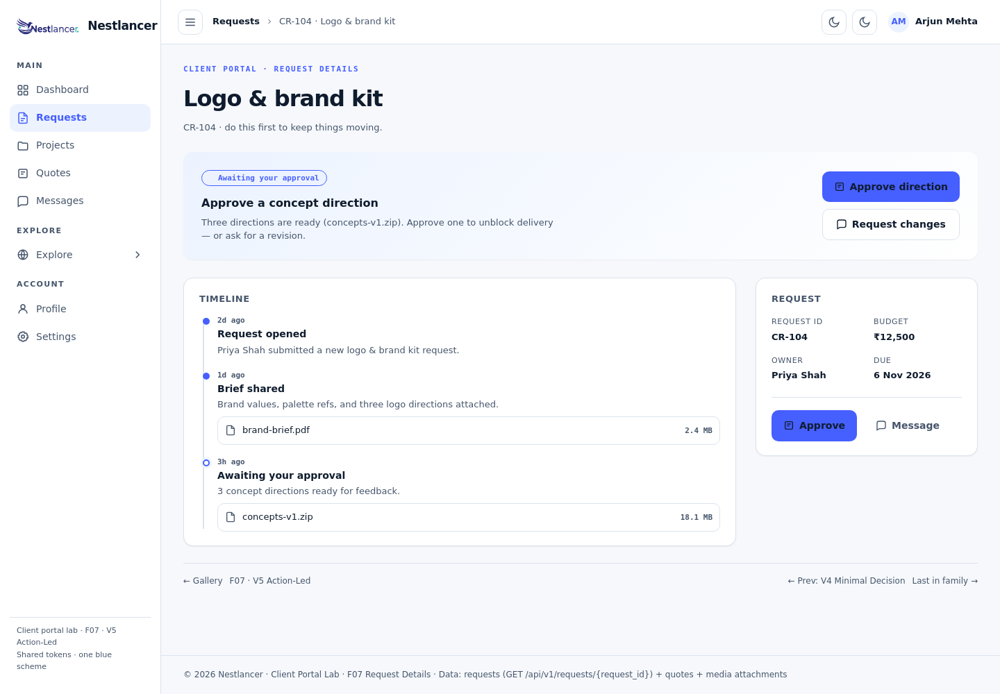


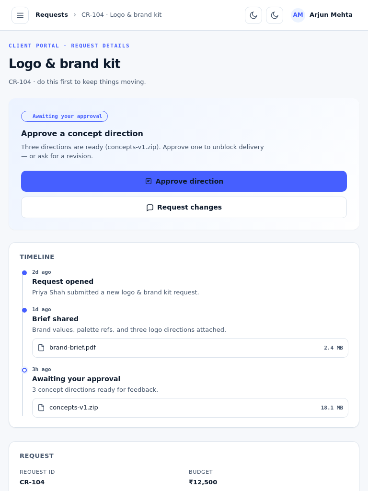

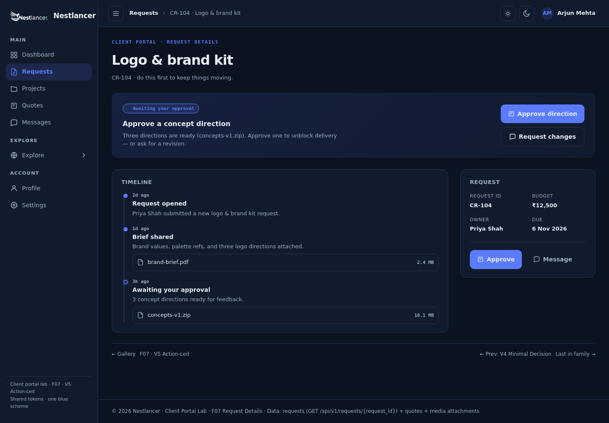

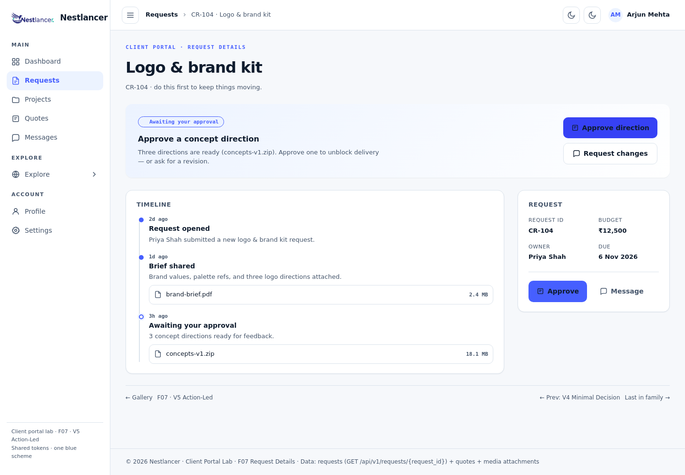

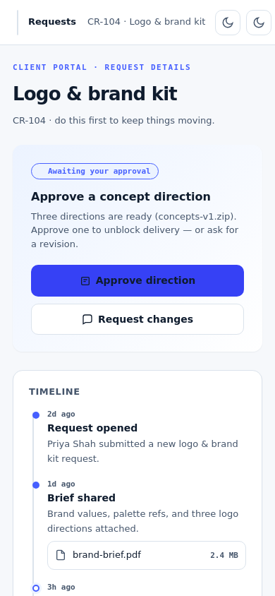

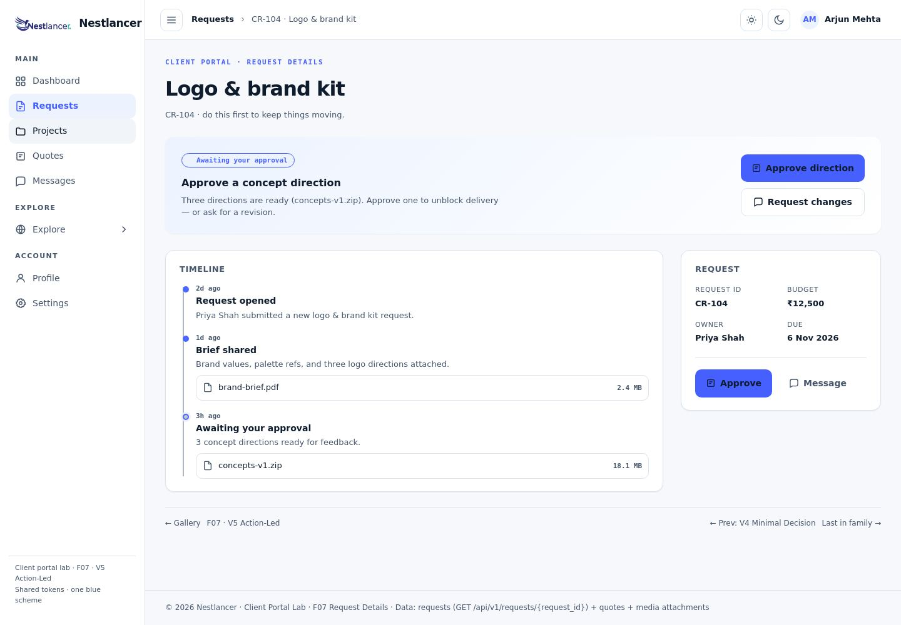
Blind comparison boards
Seeded labels A–E; the screenshots contain in-page version identifiers, so true blinding was incomplete. Mapping (review-evidence/raw/blind-mapping.json): A=V4 · B=V3 · C=V1 · D=V5 · E=V2.
One AI evaluator generated the board and mapping; board notes above were recorded in the session transcript before the mapping file was opened. This is a bias-reduction aid, not true experimental blinding.

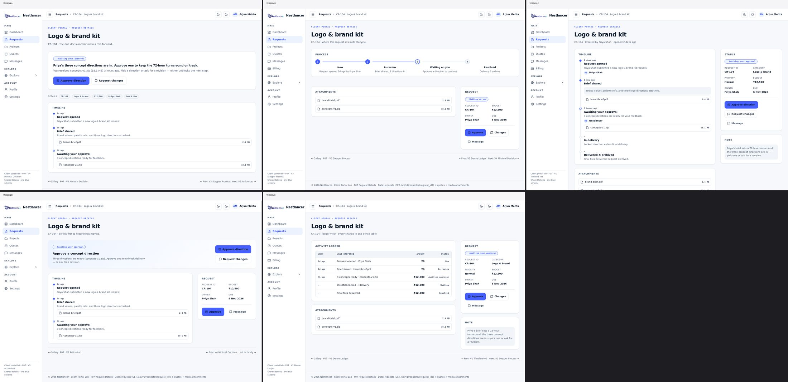

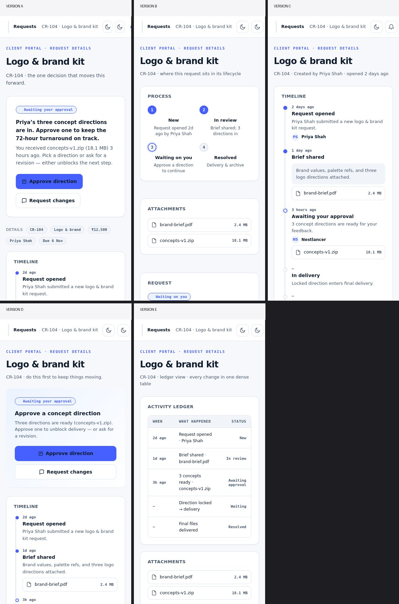
Pairwise consistency check (one evaluator, not votes)
| Pair | Better for family task | Reason |
|---|---|---|
| V1 vs V2 | V1 | Timeline+status card surfaces decision sooner than ledger |
| V1 vs V3 | V3 | Lifecycle position explicit vs inferred |
| V1 vs V4 | V4 | Decision-first minimal beats timeline-first for the pending act |
| V1 vs V5 | V1 | Single clear action set vs duplicated approve |
| V2 vs V3 | V3 | Stepper guidance vs audit table |
| V2 vs V4 | V4 | Decision framing vs ledger scanning |
| V2 vs V5 | tie | Practical tie (58.8 vs 60.0): V5 finds the action faster, V2 is cleaner once there |
| V3 vs V4 | V4 | V4 does V3's job with less machinery; V3 better when lifecycle education matters |
| V3 vs V5 | V3 | Single action set + lifecycle vs duplicate CTAs |
| V4 vs V5 | V4 | One decision one door vs two approve buttons |
One evaluator's 10-pair consistency check (S4.2), not human votes; no Bradley-Terry/Elo applied. All 10 agree with the rubric order; the V1-V4 pair prompted the documented V4 task-clarity re-check.
Coverage, limitations, change log
Persona coverage (no votes): Coverage relevance only: shared mobile header/menu defect is most relevant to phone one-handed and motor-access profiles; 4.33:1 contrast to low-vision profiles; V4 missing H1 and V1 inert tab pattern to keyboard/screen-reader profiles; V3 duplicated payment to cognitive-access and first-time profiles; V5 context-thin density to first-time profiles. No persona preferred or voted.
Task script: Generic T1-T7 + family core: invoke the primary decision control (Approve direction/Approve) and record feedback; attachment/message controls inventoried, not downloaded/sent.
- First-pass scores assigned from blind boards + raw evidence before reading prior winner claims (still unread).
Environment: Chromium 131.0.6778.33 (HeadlessChrome, Playwright bundled build chromium-1148) · Playwright 1.49.1 (pinned in review-evidence/tooling/package.json)
· axe-core 4.10.2 (pinned) · NOT cross-machine pixel-reproducible: no Docker in sandbox; pinned Playwright/Chromium used consistently for every page in this run.
Full record: review-evidence/review-manifest.json; machine data: review-evidence/scores.json.